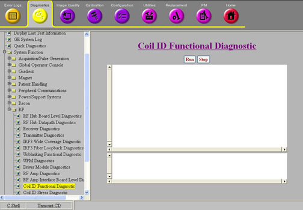
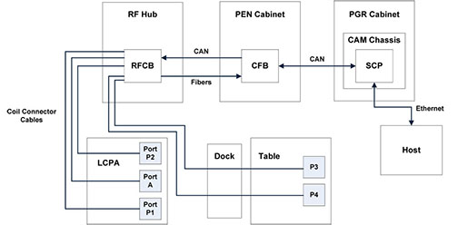

Operating Documentation
Direction 5670000, Rev# 1
Optima MR450w 1.5T Service Methods
Module Version 3.0, Version Date 8/19/08
Operating Documentation |
Diagnostics >> System Function >> RF >> Coil ID Functional Diagnostic
Diagnostics >> Hardware Location >> Magnet Room >> Coil ID Functional Diagnostic
Illustration 1: Coil ID Functional Diagnostic

This diagnostic tests the communication path for retrieving and displaying coil ID information. It is intended to be used to troubleshoot coil detection and ID problems.
RF Hub
RF Hub to LPCA Port A 37 pin cable
RF Hub to LPCA Port P1 and P2 25 pin cables
RF Hub to Table Port P3 and P4 25 pin cables
Coil connected to Port A and ports P1 to P4
No special requirements
Illustration 2: Coil ID Block Diagram

Navigate to Coil ID Functional Diagnostics screen.
Click [Run].
When you click [Run], the SCP commands the RF Hub RFCB to re-read all coils connected. The RFCB checks the coil present pins on the coil port cables (RFCB J1-J4 and J6). For each coil port cable with the coil present pins shorted, the RFCB starts a 1-wire read of the coil ID information from the 1-wire coil ID chips in the coil. When the 1-wire operations complete, the RFCB send the coil ID information to the SCP. The SCP then communicates to the Host to get the coil information from the coil database. After the Host responds with the coil information, or if the Host communication is down, the SCP displays the coil ID information to the diagnostic screen. When the RFCB detects that a coil was disconnected (coil present pins are opened), it communicates to the SCP to display this information.
After you click [Run], information is displayed for the coils that are connected to the system , or a message saying no coils are connected.
Once the diagnostic begins, it waits for the operator to connect or disconnect coils from the system. Whenever a coil is disconnected, it will display a message to that effect. Whenever a coil is connected, it will read the coil ID information and display it. It will also display any error that were encountered during the read (see Table 1).
Table 1: Diagnostic Results
| Result | Description | GE Field Action |
| RF Hub communication failure | The SCP cannot communicate to the RF Hub over the CAN link. | Run the RF Hub CAN Fiber Loopback diagnostic. |
| Coil ID read failure | The RF Hub reports a failure to read the coil ID information over the 1-wire line to the coil ID chip. |
|
| Body transmit enable mismatch; coil invalid | The body transmit enable state detected by the RFCB from the coil is different than expected. All coils except proton transmit coils are expected to have the body transmit enable pins shorted. |
|
| Coil invalid failure | There is a problem with the information in the coil ID chip or coil database. | Check that the coil is installed in the coil database. |
| No coils detected with coils connected | The RF Hub is not reporting that a coil is connected. This means that the coil present lines are broken between the coil and the RFCB. |
|